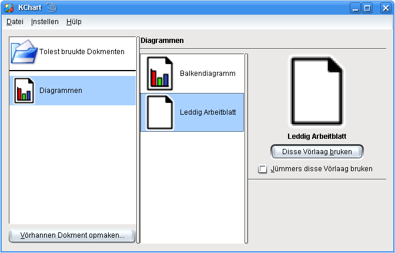
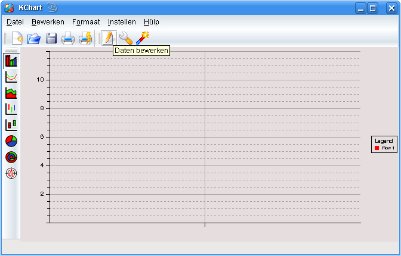
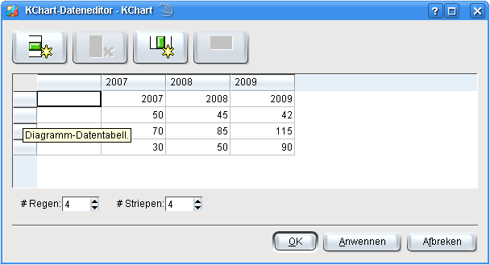
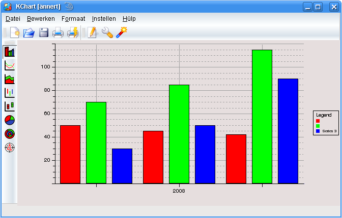
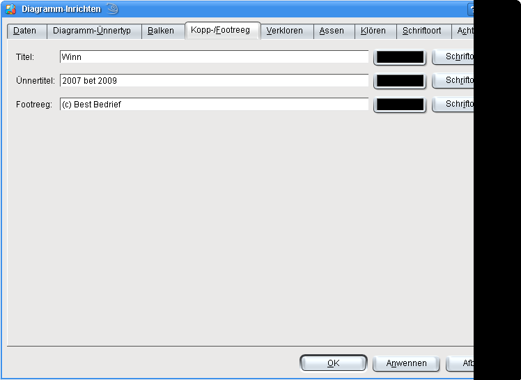
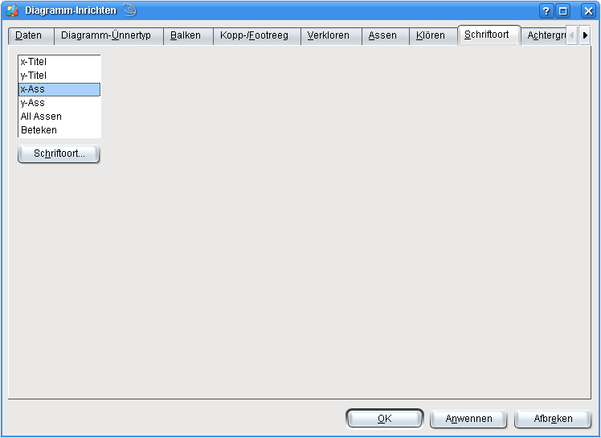
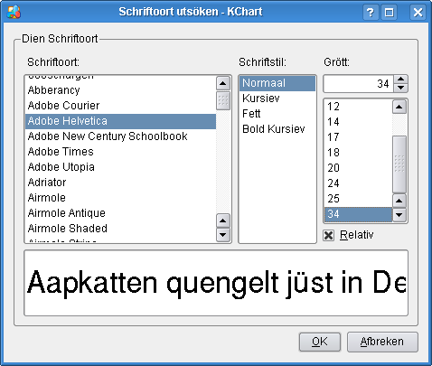
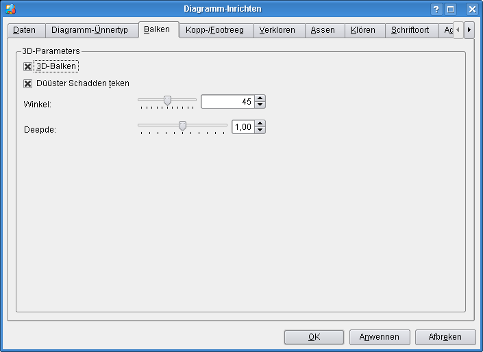
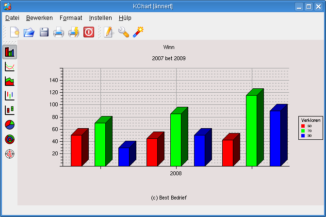

De verleden Afsnitt hett de Böversiet, verscheden Instellen, den Dateneditor un den Hölper utföhrlich verklort.
Disse Afsnitt bargt Bispillen ut dat richtige Leven un wiest, wodennig sik KChart in verscheden Situatschonen as Enkelprogramm bruken lett. Dat schall Di de Funkschonen vun KChart verkloren un wiesen, wodennig de verscheden Delen tosamenhangt
Dit Bispill, dat ok in't richtige Leven faken opduken kann, stellt de Ümsätz, oder beter, den Winn dor.
Stell Di vör, Du büst de Baas vun en egen Bedrief mit de dree Telgen Verkoop, Repareren un Wiederbillen. Nu wullt Du Di ankieken, woveel Winn Du dormit binnen en Tietruum vun en poor Johren maakt hest. Dor is en graafsch Statistik de richtige Idee för, un KChart kann Di dorbi hölpen.
Maak KChart op, un söök Leddig Arbeitblatt ut.

Klick op den Knoop . KChart wiest en leddig Dokment. Nu mööt wi en poor Daten ingeven un ok noch en poor Grundinstellen fastleggen, dormit wi en smuck Diagramm kriggt.

Toeerst, un dat is wull wichtigst, mööt de aktuellen Daten na't Diagramm kamen. Dit lett sik eenfach mit den Dateneditor doon. Normalerwies lett sik de Dateneditor mit en Klick op dat  -Lüttbild binnen den Warktüüchbalken opropen.
-Lüttbild binnen den Warktüüchbalken opropen.
Du sühst, dat noch keen Daten vörhannen sünd. Beacht ok, dat de Tall vun Datenregen un -striepen op en Minimaalweert vun "1" instellt is.
Giff nu eenfach de Daten ut dat nakamen Schirmbild in. Beacht, dat sik de Tall vun Regen un Striepen mit de Dreihfeller nerrn links ropsetten lett. De Regen- un Striepennaams laat sik ännern, wenn se anklickt warrt.

Wenn Du fardig büst, klick eenfach op den Knoop . Du hest en eenfach Balkendiagramm opstellt.

Lees wieder, wenn Du wat över dat Instellen vun Enkelheiten weten wullt.
Nu warrt en poor Enkelheiten instellt, en Diagrammtitel, un ok noch en 3D-Effekt toföögt.
Roop den Instellendialoog mit en Klick op dat  -Lüttbild in'n Warktüüchbalken op.
-Lüttbild in'n Warktüüchbalken op.

Nu warrt de Beteken ingeven. Gah na de Siet Kopp-/Footregen, un giff den Text in, as in't Schirmbild baven wiest.
Nu warrt de Schriftoort för de X-Ass en beten grötter instellt. Dat kannst Du op de Schriftoort-Siet doon.

Söök den Punkt X-Ass ut un klick op den -Knoop. Söök en grötter Schriftoort ut, as in't nakamen Schirmbild wiest.

Beacht, dat Relativ för de Schriftgrött ankrüüzt is. Dat bedüüdt, dat se de Diagrammgrött automaatsch topasst warrt. Dat is en fien Saak, un ok tomehrst dat, wat de Normaalbruker verwacht.
För en Reeg Diagrammen as a.B. Balken un Koken gifft dat noch en anner Instellensiet.

För dissen Diagrammtyp lett sik op de Balken-Siet en 3D-Effekt eenfach dör Ankrüzen vun 3D-Balken an- oder utmaken.
Mehr warrt för en normaal Diagramm nich bruukt. Beacht, dat sik ok vele vun disse Instellen mit den Hölper fastleggen laat. Man dat is en smacklich Saak. Brukers mit mehr Könen bruukt wohrschienlich den Dialoog mit all Instellenoptschonen, so as in't Bispill wiest.
Mit en Klick op den -Knoop warrt de Instellen heel eenfach övernahmen.
Dat fardige Diagramm schull liek as dat nakamen Schirmbild utsehn.

Villicht wullt Du dat Programmfinster wat grötter maken, dormit Du dat Diagramm in Heelgrött ankieken kannst. Beacht, dat sik tosamen mit de Diagrammgrött ok de Schriftgrött ännert.
Dat gifft seker noch anner Saken, de sik na Dien Möög topassen laat. So lett sik a.B. de Schriftoort vun den Titel noch grötter maken. Probeer dat Programm eenfach wieder ut. Op disse Oort lett sik op't best noch mehr över KChart rutfinnen.
In't -Menü kannst Du nu dat Diagramm noch sekern un KChart mit -> utmaken.
För't Wiederverarbeiden lett sik dat Diagramm ok na en Bilddatei exporteren. Dor steiht en helen Barg Formaten för praat. De besten Resultaten gifft dat wull mit PNG, SVG, JPG oder Krita.
Wenn Du Dien Diagramm exporteren wullt, klick eenfach in't Menü op -> un söök ut dat Filterfinster dat Dateiformaat ut.


Wullt Du wat to disse Siet seggen oder ehr verbetern?
Denn stüer Dien Vörslääg to den KDE-Dokmentatschoonkoppel!